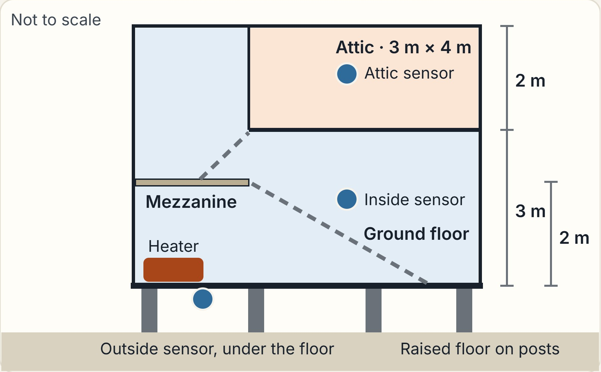
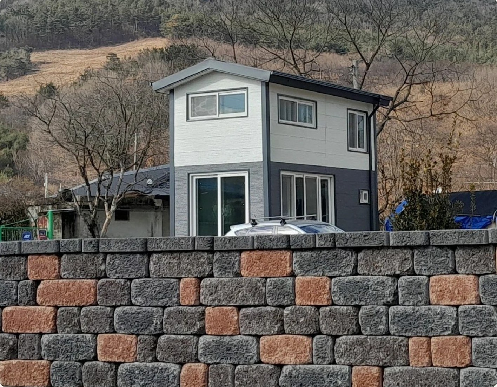
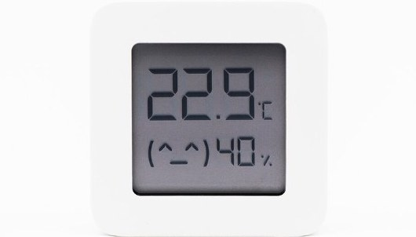
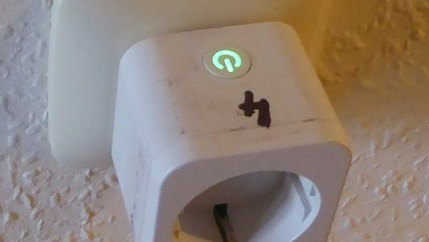
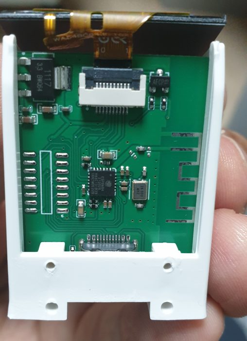
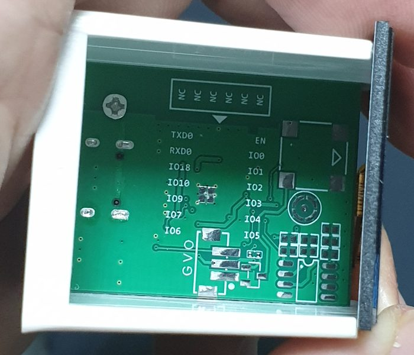
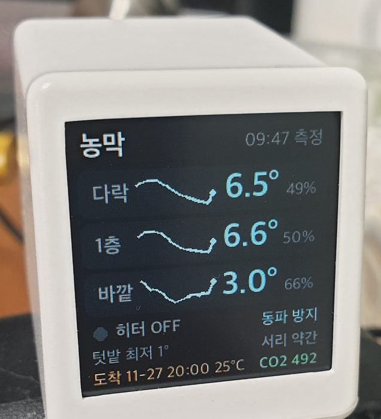
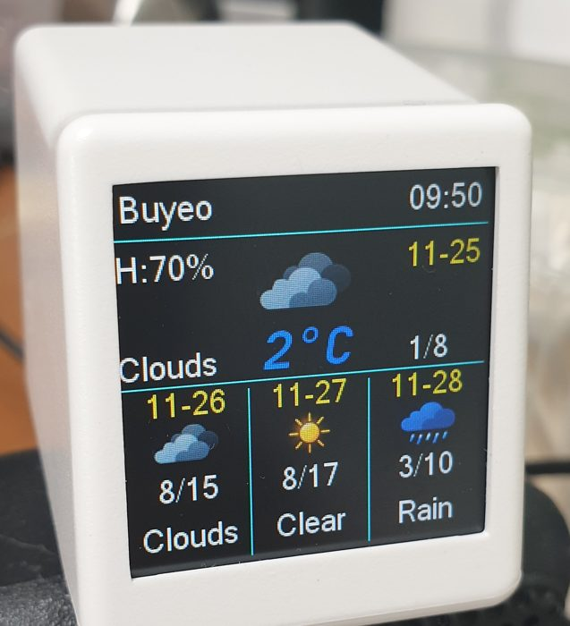
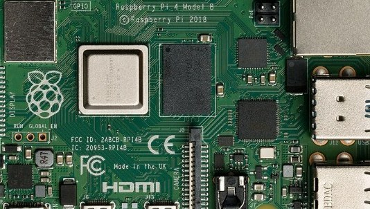
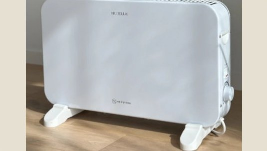

An autonomous heating system built with a Raspberry Pi, Bluetooth thermometers and a smart plug, now online through a ₩1,900-a-month LTE line
RYU Cheol · ETRI · first given 6 November 2026 · updated 25 November 2026
Nobody is there for weeks. Water pipes crack when the cabin gets too cold.
On a visit the cabin should already be comfortable, without heating all week.
The cabin is now online, but a link can drop at any moment. Every decision is still made on site.
Offline. Data left only when a visitor's phone hotspot was on.
Online all the time: logs every minute, alerts by Telegram and SMS, remote login.


Ground floor 3 m high · attic 2 m high · mezzanine 2 m above the floor, open to the ceiling · raised floor on posts
Gateway, controller, uploader, Telegram bot and SMS bot share only files. If one crashes, the others keep running.
The heater loop never waits for the internet. Sheets, Telegram and remote login are extras on top.
Sheet, Telegram and SMS all end in the same small program, so "frost" means the same thing everywhere.
Talk given. Data leaves only via a phone hotspot.
6 GB LTE plan, ₩1,900 a month, KT network.
Shelly plug tested: local API, power meter, Bluetooth, scripts.
LTE dongle on the Pi, remote login, Telegram bot, data guard, Shelly guard live.
Sheet rebuilt: 5 views, heater energy, voice alerts via Home Mini.
SMS commands through the dongle, carry‑on Wi‑Fi dongle as first route.
| Device on the cabin Wi‑Fi | LTE allowed | Why |
|---|---|---|
| Raspberry Pi itself | always | logs, alerts, forecast |
| Shelly heater plug | always | its own forecast and clock |
| Home Mini speaker | 50 MB a day · 500 MB a month | one video would eat a week |
| Fan, aux heater plugs | 5 MB a day · 30 MB a month | cloud app as a spare remote |
| Phone left in the cabin | 100 MB a day · 700 MB a month | messages only |
| Everything else (laptops…) | blocked | use the carry‑on dongle |
The Pi is the router, so one firewall table decides. Limits reset at midnight and on the 1st; a Telegram message says when one is reached.
Used so far this month · 18 Nov, 06:46
Every 10 minutes the Pi reads the dongle's own counter. Telegram at 50, 70, 85 and 95 %, and at once if one hour uses over 200 MB.
Sensors and logs are tiny. Video, updates and big downloads are not, so they wait for the carry‑on dongle.
The phone hotspot or the carry‑on Wi‑Fi dongle appears. The Pi joins it and sends everything through it first: fast, no limits, no LTE data used.
The dongle leaves with its owner. Within a minute the Pi falls back to LTE, and the data guard switches back on by itself.
| Event | Signal | Written to the Sheet |
|---|---|---|
| Arrival | Hotspot or dongle appears, or a "heat" command | time and indoor temperature |
| Departure | "frost" command, or no hotspot for 4 hours | time and how long the stay was |
A small Bluetooth thermometer and hygrometer, about US$4 each. A new reading every minute since 7–8 Nov.
The Pi never connects; it only hears broadcasts. The Shelly plug now hears the same sensors itself, so the heater can be guarded even when the Pi is down.
Each sensor has its own key. Both the Pi and the plug decrypt with AES‑CCM. Keys never leave the cabin network.
Readings queue on the Pi; when the link returns, missing hours are sent in order.
| Sensor | Used for |
|---|---|
| Inside | Frost and comfort control |
| Outside | Outdoor temperature, garden frost |
| Attic | Sleeping mode and backup |
| CO₂ monitor | Air quality, second backup |

Nights with someone there use 5–6 kWh. Empty days have needed no heating so far: sun and stored heat keep the cabin above the 3 °C frost line.
| Sheet view | Shows |
|---|---|
| Now | live values, heater mode, tonight's frost risk, to‑dos |
| 5 days | hourly temperature and humidity |
| Heating | heater energy and running hours |
| Season | daily low–high bars, like a weather app |
| Forecast | forecast vs what really happened |
720, 1,102 or 1,763 W, chosen on the heater. The plug's meter tells the Pi which step is set.
Commands travel Pi → Wi‑Fi → plug. No cloud in the control loop, password protected.
The plug runs its own small JavaScript program: a second brain next to the heater.
Why the meter matters: plug ON but almost no power → the heater has failed. Step known → preheat time can be computed.

Why a gap? Without it the relay would click every minute.
| Mode | When | Sensor | ON below / OFF above |
|---|---|---|---|
| Frost | Nobody is there | Inside | 3 °C / 5 °C |
| Comfort | You have arrived | Inside | 23 °C / 23.5 °C |
| Sleep | Sleeping in the attic | Attic | 20 °C / 21 °C |
Same commands from anywhere: frost · heat 23 · sleep · arrive 11-20 19:00 · status, typed in the Sheet, sent by Telegram, or texted to the dongle.
τ × ln( (T_eq − T_in) / (T_eq − T_target) ) × margin
T_eq = T_out + P / UA
τ = 9.16 h · UA = 47 W/K · P = the measured step (1,763 W) · margin 1.25 · at most 10 h
The Pi uses the indoor temperature now, the forecast low until arrival, and the plug's real power. If the forecast turns colder, the start moves earlier.
One message: arrive 11-20 19:00. The reply repeats the date and time back to you.
Simulate the empty cabin cooling toward the forecast: 27 °C today, about 3 °C by Friday morning → start ≈ 09:00.
Nobody confirms within 3 hours of arrival time: back to frost mode.
Old rule ("every Friday 20:00") was switched off on 14 Nov. Real visits are not on a schedule.
While the heater is OFF the Pi renews the plug's own "turn on in 30 min" timer every 5 min. Pi dead → the timer runs out → heater ON.
The plug hears the sensors, fetches the forecast itself and gets a heartbeat from the Pi. No heartbeat for 10 min → it keeps 3–5 °C on its own.
After a power cut the plug waits 10 min before acting, so Pi and plug never fight, and the Pi never mistakes the plug for a person.
No fresh reading for 45 min in frost mode → heater ON.
No command for 36 h → frost mode. Plug ON but under 100 W for 5 min → heater broken, alert.
If LTE data dies, alerts and commands still go by SMS through the same dongle.
| Channel | In: commands | Out: what the cabin says | Needs |
|---|---|---|---|
| Telegram bot | status, heat, frost, arrive … | alerts, data warnings, replies | internet |
| Google Sheet | a "commands" tab, polled every minute | dashboard, results next to each command | internet |
| SMS to the dongle NEW | a short code word + command, from allowed numbers | 40‑letter replies, alarm when offline | mobile signal only |
| Voice | (planned: "Hey Google, heating 23") | Home Mini speaks; falls back to a wired speaker | cabin Wi‑Fi |
Telegram is free. SMS: 100 short texts a month are in the ₩1,900 plan; the bot stops at 80.
All four end in one command program with one lock, so two messages can never clash.
"Open the door, 26 °C", "the heater draws no power", a time signal every 20 min while you are there.

Inside: ESP32‑C2, 4 MB flash, 1.54″ 240×240 LCD. No USB‑serial chip.

Back pads (TX/RX/IO9) for a future firmware swap. Not needed now.

Cabin page: attic, ground floor and outside with 24 h curves, heater, frost, arrival, CO₂.

Stock weather page, kept in the rotation.
The clock already accepts photos over Wi‑Fi. A script draws the cabin page as a 240×240 JPEG and uploads it.
Pi → Google Sheet → laptop script every 5 min → clock. Unchanged picture? No upload, to spare the flash.
"Is the cabin OK?" answered from across the room. A red "late" tag appears if data is over 30 min old.
| Use | How |
|---|---|
| Can this heater step hold? | warmest room = T_out + P / UA |
| Preheat start | forecast low until arrival |
| Plug guard | min(outside sensor, 6 h forecast) |
| Garden frost | station forecast − 1 to 3 °C on clear, calm nights |
| Forecast check | yesterday 23:00 forecast vs today measured |
Why the garden correction: on 7, 8 and 10 Nov the station forecast stayed above 0 °C, yet there was frost in the garden. Clear sky + no wind = 2–4 °C colder at ground level.
The stock firmware broadcast every 2 seconds, but the value only changed every 12 minutes. The controller was always acting on old news.
Flashed the open‑source pvvx firmware over Bluetooth from a laptop browser, no cable. Kept Xiaomi's encrypted format, so the gateway code did not change. Measure every 20 s, broadcast every 5 s.
| Measured in the cabin | Stock | pvvx |
|---|---|---|
| New reading every | 12 min | 1 min |
| Overshoot past the OFF value | +0.4 °C | +0.1 °C |
| Temperature swing per cycle | 1.1 °C | 0.7 °C |
| Radio bursts per minute | 29 | 12 |
| Battery shown | "100 %" | 67–96 % real |
C₁·dT₁/dt = P·u − UA₁(T₁−T_out) − G(T₁−T₂) + a·Sun
C₂·dT₂/dt = G(T₁−T₂) − UA₂(T₂−T_out)
T₁ ground floor, T₂ attic · C heat capacity · UA heat loss · G coupling between floors · a window area · u heater on/off · P measured watts
On 16 Nov the attic reached 29 °C with the heater off. A sunny window can beat the heater.
First fit 15 Nov; validation 29 Nov. Held‑out days must predict within 0.3 °C an hour ahead.
Start later on a sunny day, earlier on a cloudy one. Let the sun finish the job.
Fans or air conditioners that run only when a room is too hot.
Keep temperature and humidity in range, even when the network is down.
Protect rice, coffee or seeds from heat and damp.
Code and notes: github.com/ryucheol/sc-sensors

$60–90 est.
₩17,544 · $12.5
₩14,600 · $10.4
₩31,700 · $22.6
₩1,900 · $1.4 / month

₩59,900 · $42.8
Total, now online
+ $1.4 a month. The old Wi‑Fi plug (₩4,650) still runs a spare heater. Desk clock monitor ₩4,242 ($3). Optional: carry‑on Wi‑Fi dongle ₩41,500, a used access point.
Prices paid Nov 2026, ₩1,400 = US$1. Photos: Wikimedia Commons, Laserlicht and J. Hallick (CC BY-SA 4.0), product listing images, own photos.